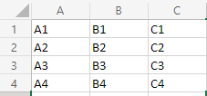

]tabelas também são importantes para a criação de vários sites, por mais que seja uma coisa caindo em desuso, então nesse doc eu vou estudar um pouco sobre elas
meu objetivo é fazer essa tabela usando html
a hierarquia das tabelas simples segue da seguinte forma: table = a tabela table row <tr>= uma linha da tabela table data <td> = os dados dentro dessa linha da tabela
| A1 | B1 | C1 |
| A2 | B2 | C2 |
| A3 | B3 | C3 |
| A4 | B4 | C4 |